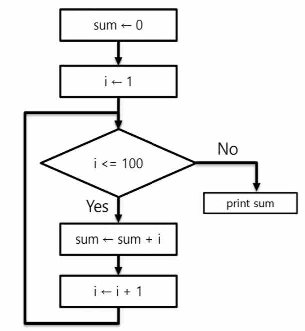
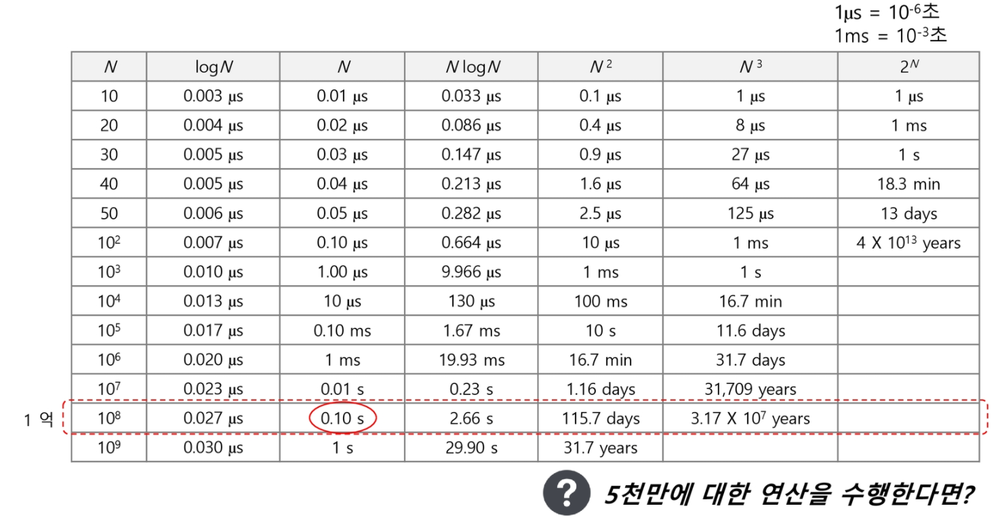

00. 알고리즘¶
(명) 알고리즘 : 유한한 단계를 통해 문제를 해결하기 위한 절차나 방법이다. 주로 컴퓨터용어로 쓰이며, 컴퓨터가 어떤 일을 수행하기 위한 단계적 방법을 말한다.
간단하게 다시 말하면 어떠한 문제를 해결하기 위한 절차라고 볼 수 있다.
컴퓨터 분야에서 알고리즘을 표현하기 위한 방법은 크게 두 가지
슈더코드(Pseudocode)와 순서도
def CalcSum(n) : sum ← 0 for i in range (1, n + 1) : sum ← sum + i; return sum;

알고리즘 성능 측정
APS 과정의 목표 중의 하나는 보다 좋은 알고리즘을 이해하고 활용하는 것이다.
무엇이 좋은 알고리즘인가?
정확성 : 얼마나 정확하게 동작하는가
작업량 : 얼마나 적은 연산으로 원하는 결과를 얻어내는가
메모리 사용량 : 얼마나 적은 메모리를 사용하는가
단순성 : 얼마나 단순한가
최적성 : 더 이상 개선할 여지없이 최적화되었는가
주어진 문제를 해결하기 위해 여러 개의 다양한 알고리즘이 가능
-> 어떤 알고리즘을 사용해야 하는가?
알고리즘의 성능 분석 필요
많은 문제에서 성능 분석의 기준으로 알고리즘의 작업량을 비교한다.
알고리즘의 작업량을 표현할 때 시간복잡도로 표현한다
시간 복잡도 (Time Complexity)¶
실제 걸리는 시간을 측정
실행되는 명령문의 개수를 계산
빅-오 (O) 표기법¶
빅-오 표기법 (Big-Oh Notation)
시간 복잡도 함수 중에서 가장 큰 영향력을 주는 n에 대한 항만을 표시
계수(Coefficient)는 생략하여 표시
예를 들어
O(3n + 2) = O(3n) = O(n) ----- ---- 최고차항 선택 계수 제거
\(O(2n^{2} + 10n + 100) = O(n^{2})\)
\(O(4) = O(1)\)
n개의 데이터를 입력 받아 저장한 후 각 데이터에 1씩 증가시킨 후 각 데이터를 화면에 출력하는 알고리즘의 시간 복잡도는 ?
\(O(n)\)

